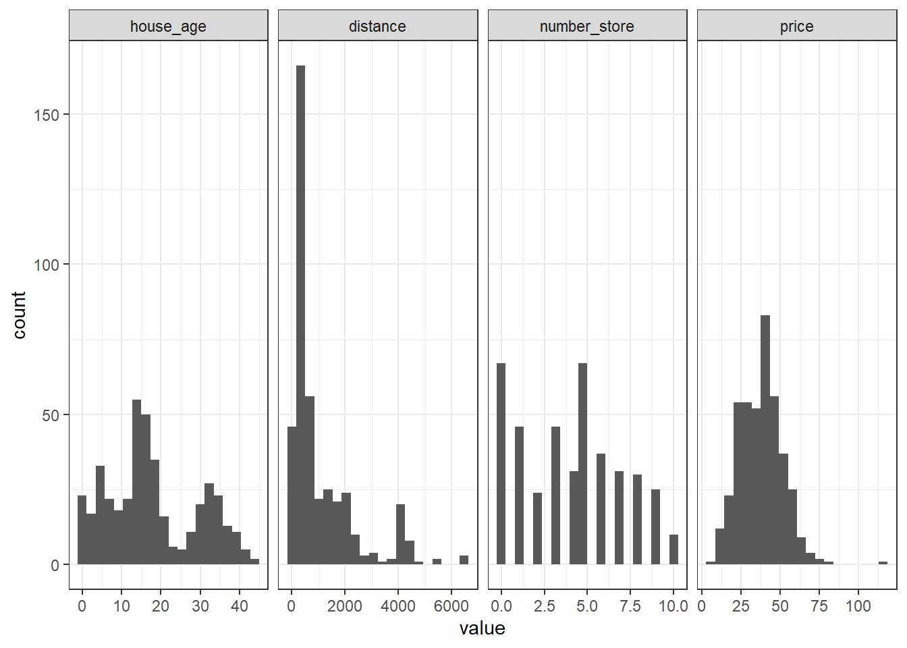
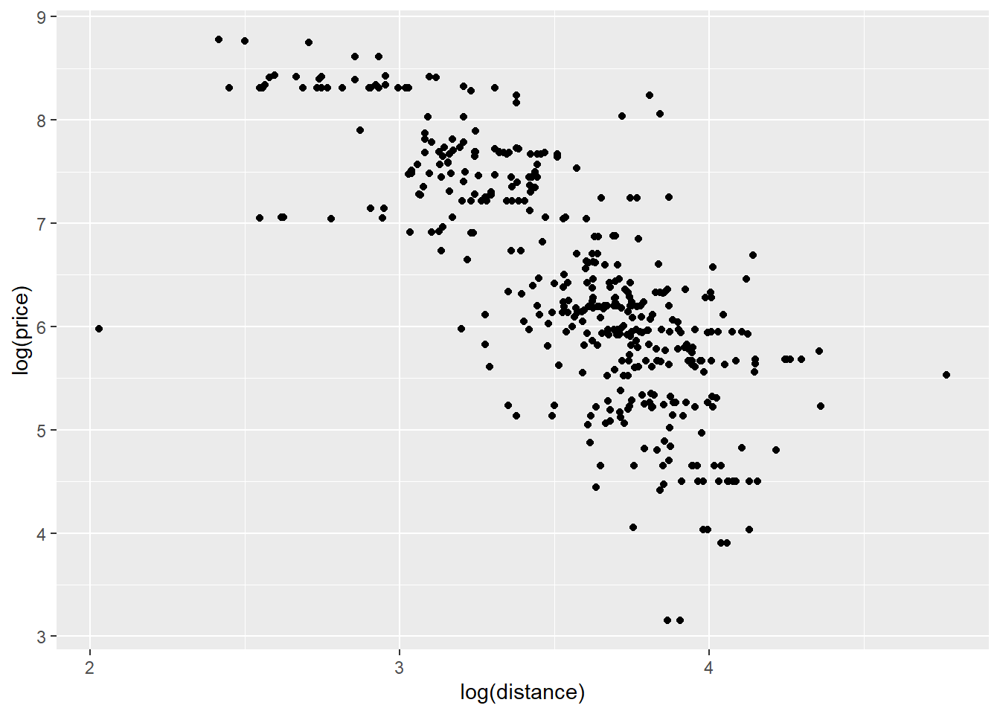
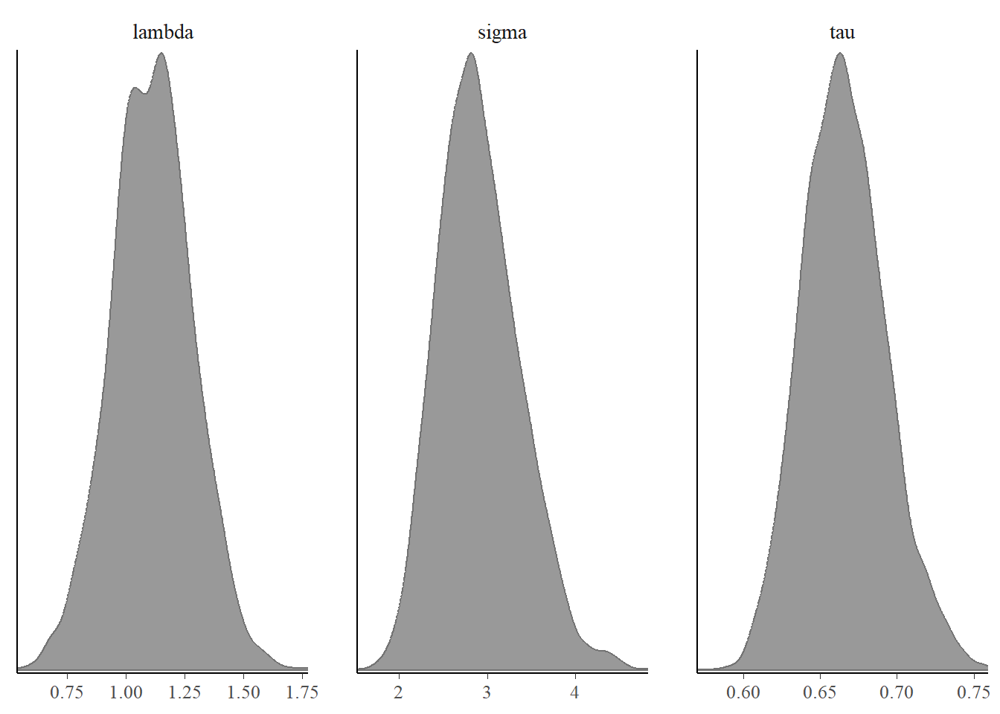
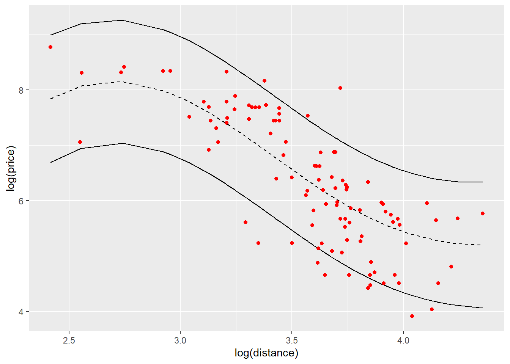
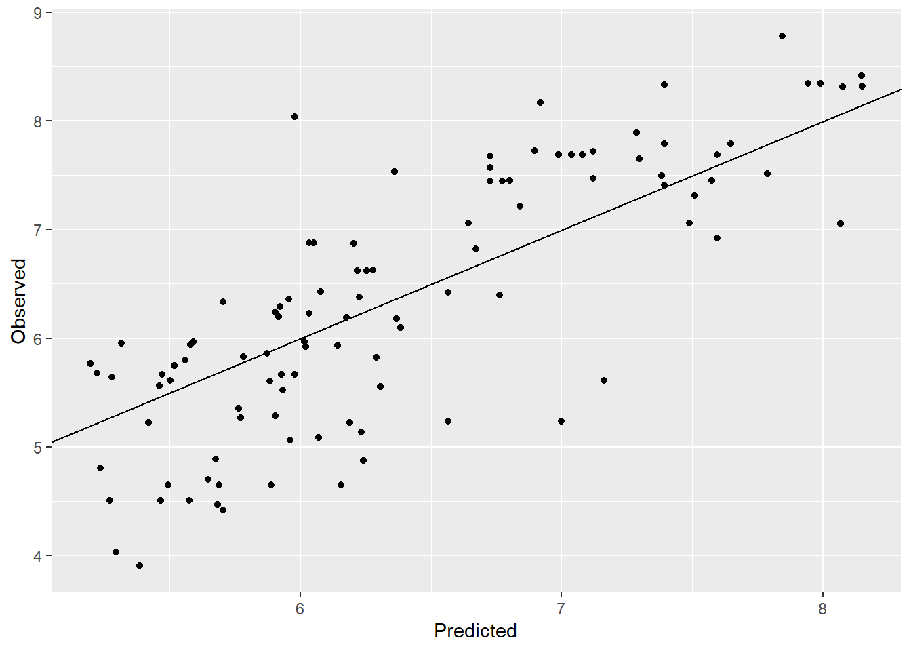

# Load the packages
library(reshape2)
library(ggplot2)
library(ggh4x)
library(ggcorrplot)
library(car) # to calculate the VIF values
library(GGally) # for pairs plot using ggplot framework
library(cmdstanr)
library(bayesplot)
library(rstanarm)
library(tidyr)Good houses are always in demand. However in the recent times, the price of house has increased exponentially. It will be interesting to identify the factors affecting the price of house. I found this dataset on UCI machine learning repository which gives the house price per unit area and related variables.
The idea is to build a predictive model to predict house price per unit area based on the variables like the age of house, etc. We will look at the exploratory data analysis first and later build prediction models. First let us access and process the data through R.
# Get data from github repo
path = "https://raw.githubusercontent.com/adityaranade/portfolio/refs/heads/main/real_estate/real_estate_valuation.csv"
data0 <- read.csv(path, header = TRUE)
# Data processing
# clean the column names
colnames(data0) <- c("ID", "date", "house_age", "distance", "number_store", "latitude", "longitude", "price")
# Check the first 6 rows of the dataset
data0 |> head() ID date house_age distance number_store latitude longitude price
1 1 2012.917 32.0 84.87882 10 24.98298 121.5402 37.9
2 2 2012.917 19.5 306.59470 9 24.98034 121.5395 42.2
3 3 2013.583 13.3 561.98450 5 24.98746 121.5439 47.3
4 4 2013.500 13.3 561.98450 5 24.98746 121.5439 54.8
5 5 2012.833 5.0 390.56840 5 24.97937 121.5425 43.1
6 6 2012.667 7.1 2175.03000 3 24.96305 121.5125 32.1We will focus on the 3 variables as follows
house_age : age of house in years.
distance : distance to nearest MRT station in meters.
number_store : the number of convenience stores in the living circle on foot.
price : Price per unit area where 1 unit is 1 ping = 3.3 sq. meter
Let us look at the distribution of these 3 variables
# Check the rows which do not have any entries
ind.na <- sum(is.na(data0))
ind.na # No NA values[1] 0# Filter the data
# column house_age, distance and price
# data <- data0 |> select(c(house_age,distance,price))
data <- data0[,c("house_age","distance","number_store","price")]
data |> head() house_age distance number_store price
1 32.0 84.87882 10 37.9
2 19.5 306.59470 9 42.2
3 13.3 561.98450 5 47.3
4 13.3 561.98450 5 54.8
5 5.0 390.56840 5 43.1
6 7.1 2175.03000 3 32.1# Data for histogram
melted_data <- melt(data)
# Plot the histogram of all the variables
ggplot(melted_data,aes(value))+
geom_histogram(bins = 20)+
# geom_histogram(aes(y = after_stat(density)),bins = 20)+
facet_grid2(~variable, scales="free")+theme_bw()
Histogram does not give much information. Let us look at the correlation plot to get an idea of how the variables are correlated with each other.
# correlation plot of all the variables
corr <- round(cor(data), 2)
ggcorrplot(corr)
house_age is not related to distance and number_store which is not surprising. distance variable is positively correlated with number of stores which again not surprising. However price is negatively correlated with distance to nearest MRT station as well as house age and positively correlated with number of stores in the vicinity which is again logical. Next we look at the pairs plot which will show the bivariate scatter plots as well as the correlation between each variables. Scatter plots in the last row is of interest as it shows the pairwise scatterplots where price is on the y axis and the other variables are on the x axis.
ggpairs(data)
The scatterplot of price vs. distance does not look linear but more of curved. We will focus on predicting price based on the distance variable. We will look at a simple linear regression where we will try to predict price as a function of distance. First let us convert the price and distance variable to log scale and look at scatterplot of the same.
# select the distance and price variable and convert to log scale
data2 <- data |> subset(,c("distance", "price")) |> log()
# scatterplot of price vs. distance
ggplot(data2,aes(price,distance))+geom_point()+
labs(y = "log(price)", x="log(distance)")
Once we convert the variables to log scale, the scatterplot looks more linear compared to the scatterplot where the variables are not on log scale. We will first look at simple linear regression
# split the data into training and testing data
seed <- 23
set.seed(seed)
ind <- sample(floor(0.75*nrow(data)),
replace = FALSE)
# Training dataset
data_train <- data2[ind,]
# Testing dataset
data_test <- data2[-ind,]
# Simple linear regression using raw data
model <- lm(price ~ distance, data = data_train)
summary(model)
Call:
lm(formula = price ~ distance, data = data_train)
Residuals:
Min 1Q Median 3Q Max
-1.65672 -0.11925 0.00352 0.14145 0.95893
Coefficients:
Estimate Std. Error t value Pr(>|t|)
(Intercept) 5.33983 0.08801 60.67 <2e-16 ***
distance -0.27701 0.01353 -20.47 <2e-16 ***
---
Signif. codes: 0 '***' 0.001 '**' 0.01 '*' 0.05 '.' 0.1 ' ' 1
Residual standard error: 0.2608 on 308 degrees of freedom
Multiple R-squared: 0.5763, Adjusted R-squared: 0.5749
F-statistic: 418.9 on 1 and 308 DF, p-value: < 2.2e-16# Prediction on the testing dataset
y_pred <- predict(model, data_test)
# Calculate residuals = observed - predicted
residuals <- (data_test$price - y_pred)
# Residual vs. predicted plot
ggplot(NULL,aes(y_pred,residuals))+geom_point()+
labs(y = "Residuals", x="Predicted price on log scale")+
geom_hline(yintercept = 0, colour = "red")
The residual plot shows a slight curved pattern which indicates the linearity assumption of the model is not satisfied. Hence our model is not reliable. This is not surprising since the scatterplot indicates a slight curved fit rather than a linear fit.
# Create a observed vs. predicted plot
ggplot(NULL,aes(y_pred,data_test$price))+geom_point()+
labs(y = "Observed", x="Predicted")+
# lims(x=c(0,80),y=c(0,80))+
geom_abline()
# Calculate RMSE
rmse <- (residuals)^2 |> mean() |> sqrt()
round(rmse,2)[1] 0.24# Check the assumptions of the regression model
par(mfrow = c(2, 2))
plot(model)
The model is has RMSE = 2.43 and the observed vs. predicted plot is just about decent. We will now look at a Gaussian process model which can handle non linear relationships very well.
# Read the GP STAN model
# Read the STAN file
file_stan <- "GP.stan"
# Compile stan model
model_stan <- cmdstan_model(stan_file = file_stan,
cpp_options = list(stan_threads = TRUE))
model_stan$check_syntax()x_train <- data_train[,-1]
y_train <- data_train[,1]
x_test <- data_test[,-1]
y_test <- data_test[,1]
x_train <- x_train |> as.matrix()
x_test <- x_test |> as.matrix()
standata <- list(K = ncol(x_train),
N1 = nrow(x_train),
X1 = x_train,
Y1 = y_train,
N2 = nrow(x_test),
X2 = x_test,
Y2 = y_test)
fit_optim <- model_stan$optimize(data = standata,
seed = seed,
threads = 10)Initial log joint probability = -565.855
Iter log prob ||dx|| ||grad|| alpha alpha0 # evals Notes
15 -46.7172 5.19147e-05 0.000881372 0.9501 0.9501 20
Optimization terminated normally:
Convergence detected: relative gradient magnitude is below tolerance
Finished in 0.7 seconds.fsum_optim <- as.data.frame(fit_optim$summary())
# The optimized parameter would be
par_ind <- 2:4
opt_pars <- fsum_optim[par_ind,]
opt_pars variable estimate
2 lambda 1.114400
3 sigma 2.776290
4 tau 0.662449# starting value of parameters
start_parameters <- rep(list(list(lambda = opt_pars[1,2],
sigma = opt_pars[2,2],
tau = opt_pars[3,2])),4)
# Run the MCMC with optimized values as the starting values
fit <- model_stan$sample(
data = standata,
init = start_parameters,
seed = seed,
iter_warmup = 1000,
iter_sampling = 1000,
chains = 4,
parallel_chains = 4,
refresh = 1000,
threads = 8,
save_warmup = FALSE)Running MCMC with 4 parallel chains, with 8 thread(s) per chain...
Chain 1 Iteration: 1 / 2000 [ 0%] (Warmup)
Chain 2 Iteration: 1 / 2000 [ 0%] (Warmup)
Chain 3 Iteration: 1 / 2000 [ 0%] (Warmup)
Chain 4 Iteration: 1 / 2000 [ 0%] (Warmup) Chain 4 Iteration: 1000 / 2000 [ 50%] (Warmup)
Chain 4 Iteration: 1001 / 2000 [ 50%] (Sampling)
Chain 1 Iteration: 1000 / 2000 [ 50%] (Warmup)
Chain 1 Iteration: 1001 / 2000 [ 50%] (Sampling)
Chain 3 Iteration: 1000 / 2000 [ 50%] (Warmup)
Chain 3 Iteration: 1001 / 2000 [ 50%] (Sampling)
Chain 2 Iteration: 1000 / 2000 [ 50%] (Warmup)
Chain 2 Iteration: 1001 / 2000 [ 50%] (Sampling)
Chain 4 Iteration: 2000 / 2000 [100%] (Sampling)
Chain 4 finished in 443.5 seconds.
Chain 2 Iteration: 2000 / 2000 [100%] (Sampling)
Chain 2 finished in 449.2 seconds.
Chain 3 Iteration: 2000 / 2000 [100%] (Sampling)
Chain 3 finished in 454.6 seconds.
Chain 1 Iteration: 2000 / 2000 [100%] (Sampling)
Chain 1 finished in 465.3 seconds.
All 4 chains finished successfully.
Mean chain execution time: 453.1 seconds.
Total execution time: 465.8 seconds.# Summary
# fit$summary()
# Save the summary
fsum <- as.data.frame(fit$summary())
# Plot posterior distribution of parameters
bayesplot::color_scheme_set("gray")
bayesplot::mcmc_dens(fit$draws(c("lambda","sigma","tau")))
The posterior distribution of parameters look good with unimodal distribution and the trace plots also show good mix so we can say the parameters have converged.
# index for predictive mean and variance
pred_mean_ind <- max(par_ind)+(1:length(y_test))
pred_var_ind <- max(pred_mean_ind)+(1:length(y_test))
# Prediction
y_observed <- y_test #observed
y_predicted <- fsum[pred_mean_ind,c(2)] #predicted mean
y_predicted_var <- fsum[pred_var_ind,c(2)] #predicted
lb <- y_predicted + qnorm(0.05,0,sqrt(y_predicted_var))
ub <- y_predicted + qnorm(0.95,0,sqrt(y_predicted_var))
# Predictions with bounds
pred <- ggplot(NULL,aes(x_test,y_predicted))+geom_line(linetype = 2)+
geom_line(aes(x_test,lb))+
geom_line(aes(x_test,ub))+
geom_point(aes(x_test,y_observed),col="red")+
labs(y = "log(price)", x="log(distance)")
pred
The black dashed line is the predictive mean price on log scale for distance on log scale. The black solid lines give the 95% upper bound and lower bound for predictions. The points indicated in red color are the observations in testing data set and we can see most of them are in the prediction bounds.
# Observed vs predicted
ovp_1d <- ggplot(NULL,aes(y_predicted,y_observed))+geom_point()+
labs(y = "Observed", x="Predicted")+
geom_abline()
ovp_1d
rmse = sqrt(mean((y_observed-y_predicted)^2)) |> round(2)
rmse[1] 0.73Observed vs. predicted plot also looks good with a few points away from the line. The RMSE improved from 2.43 to 0.22 which is a good improvement.